Partial #123 review prototype, source dd10bd9ff68492ffd53844bc6e07e9bbb904052a. Display-only moves apply immediately. Chain changes and copies open a review; Escape cancels. Downward descendant moves remain refused. No production data is changed.
Fixture: Shokupan, 16 October origin. Screenshots below document operated states; opening an interactive link starts the fixture, then follow the caption to replay it. Before / chain / after are the same fixture and session, not a historical round-2 comparison.
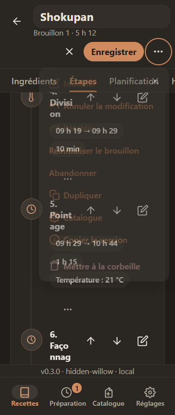
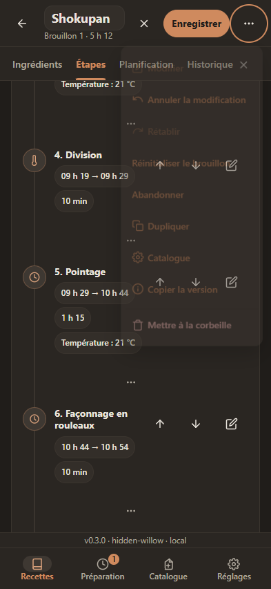
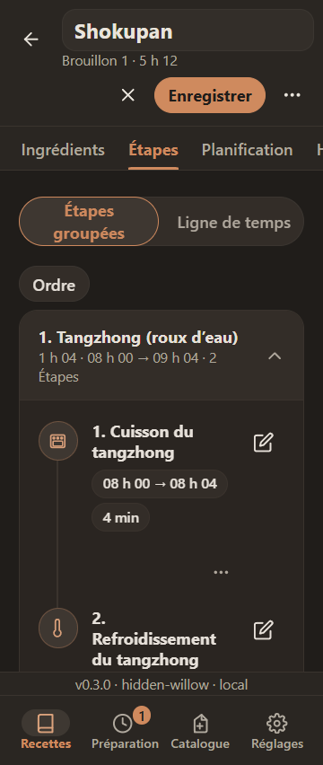
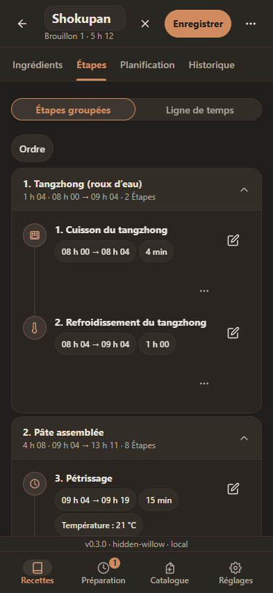
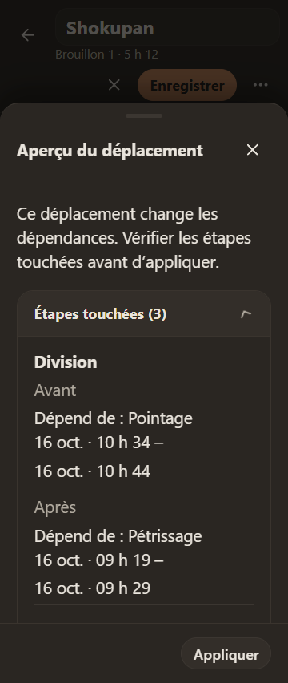
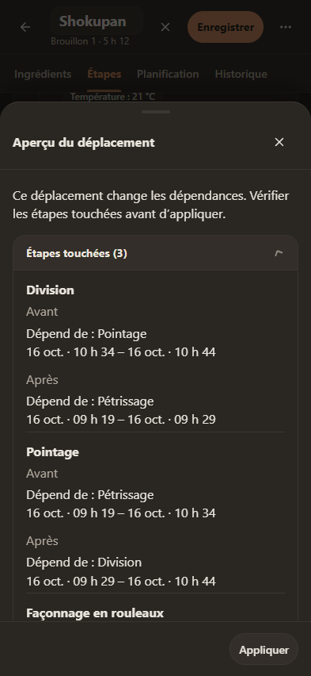
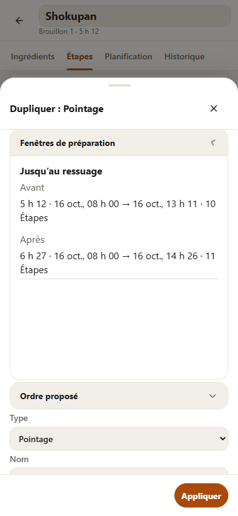
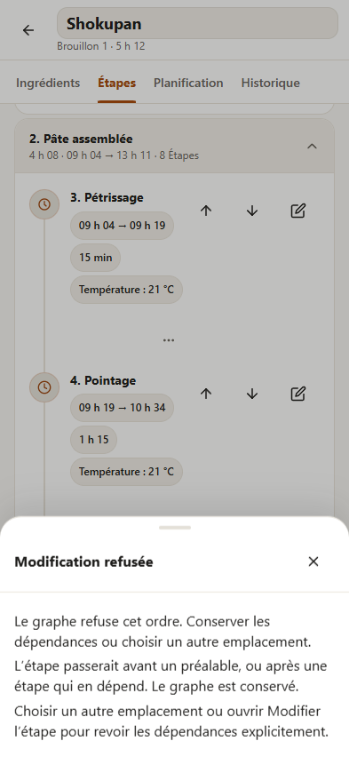
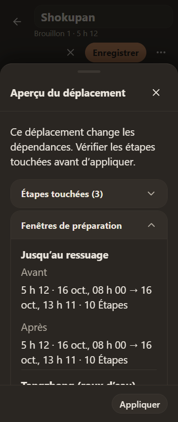
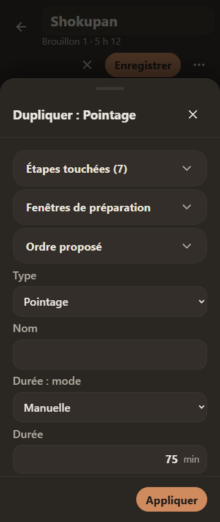
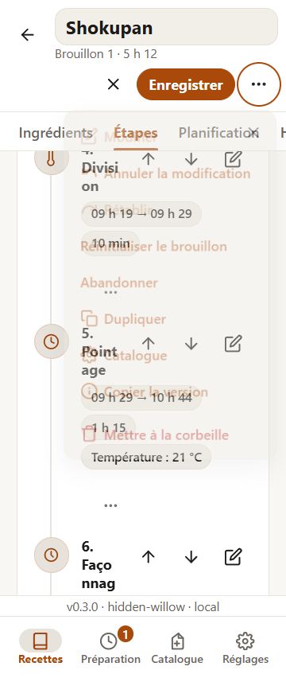
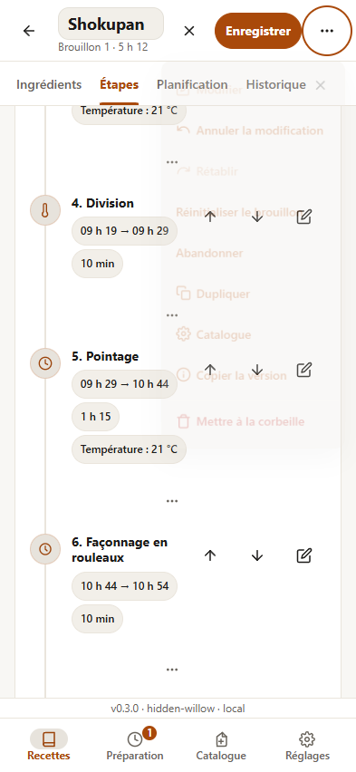
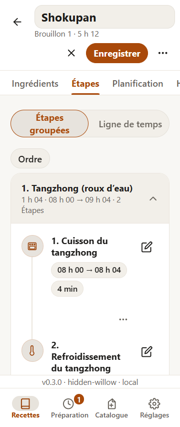
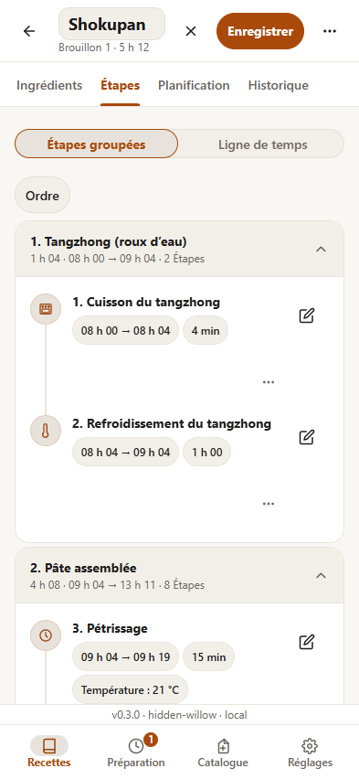
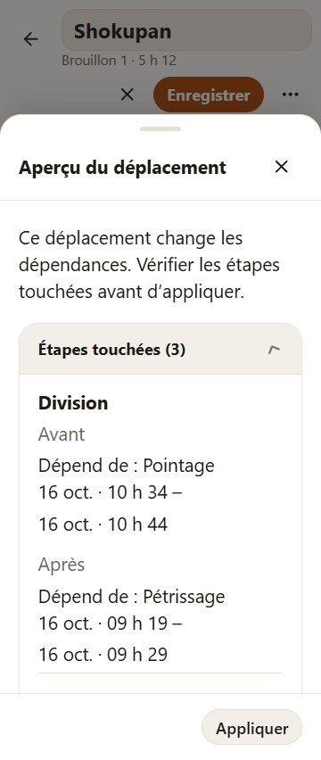
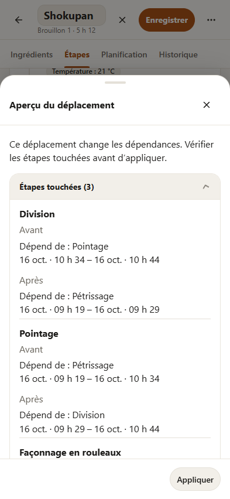
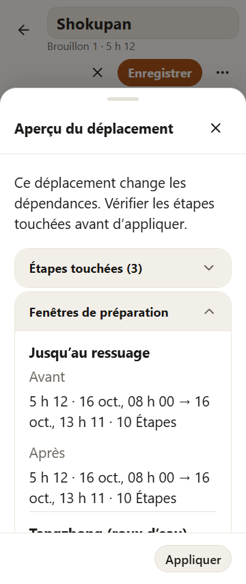
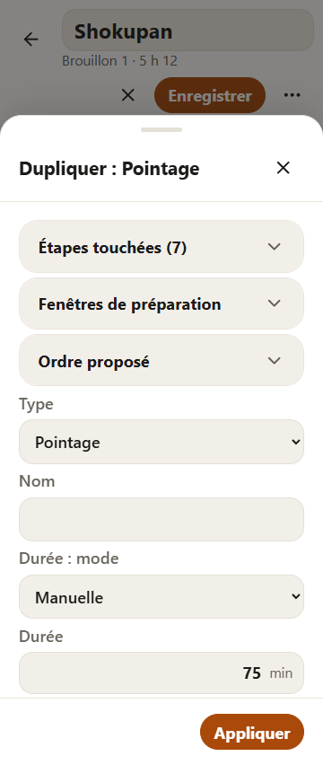
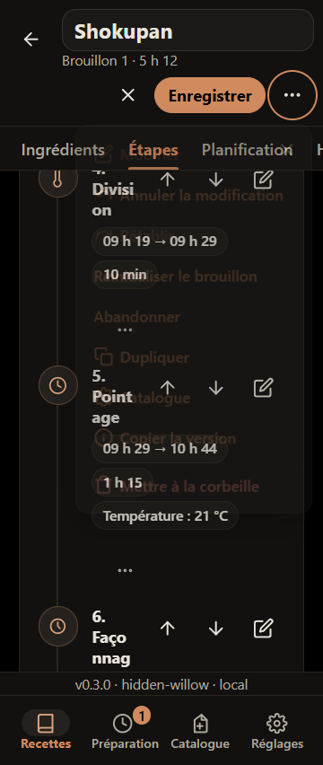
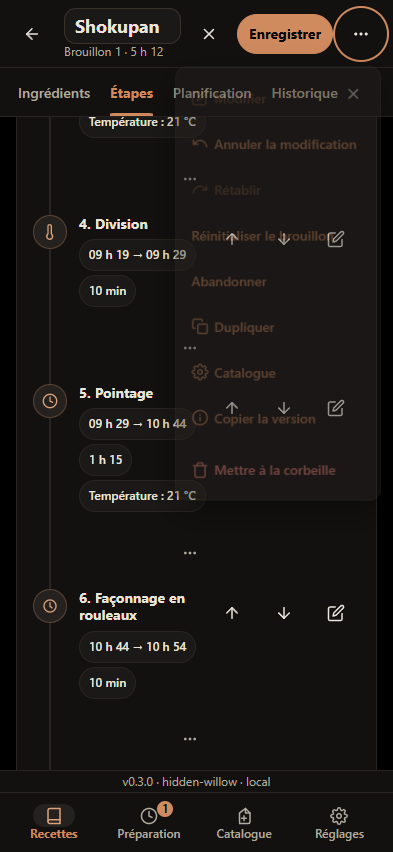
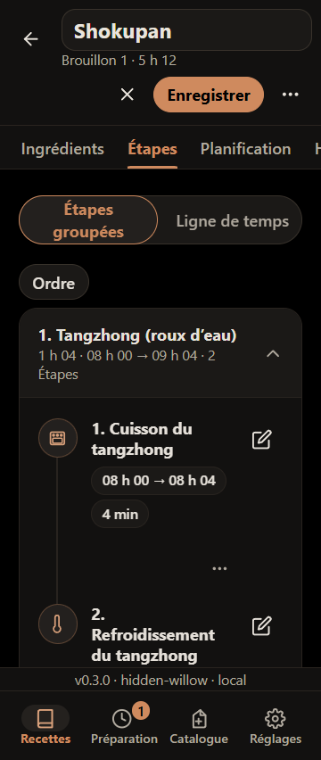
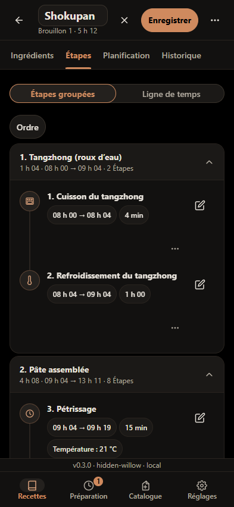
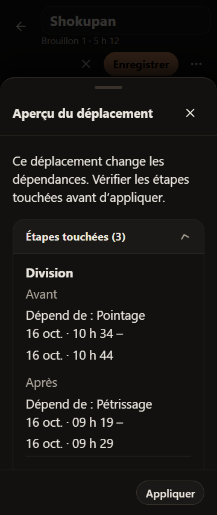
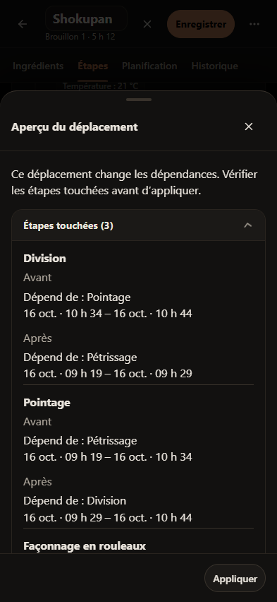
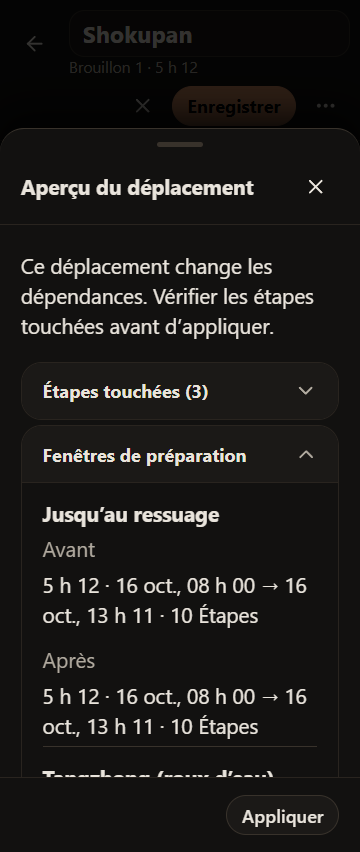
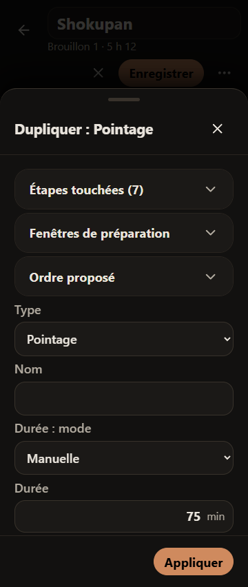